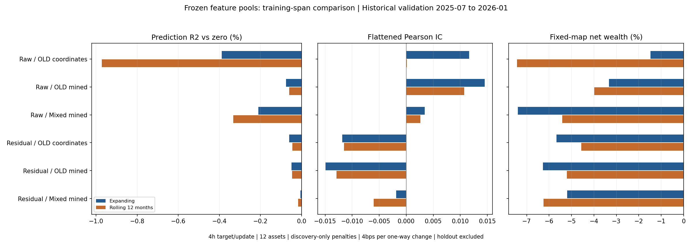

复用已有候选，不新搜索，不读取holdout。12个模型完整展示；历史验证已见，发现反馈OOF不独立于源搜索。12个月训练没有普遍修复迁移，固定交易映射全部亏损；特征与预测均保留。
未来原始收益含持有期资金费价格代理；风险残差目标单列。每4h完成快照决策，承担之后完整5m收益，单向变仓4bps，真实份额漂移，净财富逐行复利；候选与惩罚只用发现数据。

| model | period | ic | mse | r2_vs_zero | prediction_rms | observations |
|---|---|---|---|---|---|---|
| raw_return__old_coordinates__expanding | discovery_in_sample_diagnostic | 0.080984 | 0.000278 | 0.006288 | 0.000979 | 65640 |
| raw_return__old_coordinates__expanding | discovery_feedback_oof | 0.045285 | 0.000324 | 0.002110 | 0.001028 | 39372 |
| raw_return__old_coordinates__expanding | historical_validation | 0.011635 | 0.000219 | -0.003891 | 0.001023 | 15468 |
| raw_return__old_coordinates__rolling12 | discovery_in_sample_diagnostic | 0.120942 | 0.000339 | 0.012509 | 0.001372 | 26268 |
| raw_return__old_coordinates__rolling12 | discovery_feedback_oof | 0.049664 | 0.000324 | 0.002449 | 0.001192 | 39372 |
| raw_return__old_coordinates__rolling12 | historical_validation | 0.000105 | 0.000220 | -0.009728 | 0.001428 | 15468 |
| raw_return__old_mined__expanding | discovery_in_sample_diagnostic | 0.062766 | 0.000279 | 0.001751 | 0.000393 | 65640 |
| raw_return__old_mined__expanding | discovery_feedback_oof | 0.027657 | 0.000324 | 0.000601 | 0.000464 | 39372 |
| raw_return__old_mined__expanding | historical_validation | 0.014508 | 0.000218 | -0.000756 | 0.000392 | 15468 |
| raw_return__old_mined__rolling12 | discovery_in_sample_diagnostic | 0.104395 | 0.000342 | 0.003629 | 0.000433 | 26268 |
| raw_return__old_mined__rolling12 | discovery_feedback_oof | 0.031974 | 0.000324 | 0.000819 | 0.000469 | 39372 |
| raw_return__old_mined__rolling12 | historical_validation | 0.010706 | 0.000218 | -0.000598 | 0.000397 | 15468 |
| raw_return__mixed_mined__expanding | discovery_in_sample_diagnostic | 0.063930 | 0.000279 | 0.003755 | 0.000700 | 65640 |
| raw_return__mixed_mined__expanding | discovery_feedback_oof | 0.036318 | 0.000324 | 0.001422 | 0.000715 | 39372 |
| raw_return__mixed_mined__expanding | historical_validation | 0.003405 | 0.000219 | -0.002101 | 0.000661 | 15468 |
| raw_return__mixed_mined__rolling12 | discovery_in_sample_diagnostic | 0.084690 | 0.000341 | 0.006205 | 0.000969 | 26268 |
| raw_return__mixed_mined__rolling12 | discovery_feedback_oof | 0.031007 | 0.000324 | 0.001001 | 0.000847 | 39372 |
| raw_return__mixed_mined__rolling12 | historical_validation | 0.002601 | 0.000219 | -0.003319 | 0.000867 | 15468 |
| cash_beta_residual__old_coordinates__expanding | discovery_in_sample_diagnostic | 0.030853 | 0.000082 | 0.000587 | 0.000106 | 65100 |
| cash_beta_residual__old_coordinates__expanding | discovery_feedback_oof | 0.019105 | 0.000088 | 0.000341 | 0.000133 | 39372 |
| cash_beta_residual__old_coordinates__expanding | historical_validation | -0.011840 | 0.000048 | -0.000598 | 0.000106 | 15468 |
| cash_beta_residual__old_coordinates__rolling12 | discovery_in_sample_diagnostic | 0.038441 | 0.000087 | 0.000638 | 0.000089 | 26268 |
| cash_beta_residual__old_coordinates__rolling12 | discovery_feedback_oof | 0.018601 | 0.000088 | 0.000331 | 0.000138 | 39372 |
| cash_beta_residual__old_coordinates__rolling12 | historical_validation | -0.011526 | 0.000048 | -0.000447 | 0.000087 | 15468 |
| cash_beta_residual__old_mined__expanding | discovery_in_sample_diagnostic | 0.047123 | 0.000082 | 0.000788 | 0.000084 | 65100 |
| cash_beta_residual__old_mined__expanding | discovery_feedback_oof | 0.015294 | 0.000088 | 0.000223 | 0.000113 | 39372 |
| cash_beta_residual__old_mined__expanding | historical_validation | -0.014914 | 0.000048 | -0.000489 | 0.000082 | 15468 |
| cash_beta_residual__old_mined__rolling12 | discovery_in_sample_diagnostic | 0.065708 | 0.000087 | 0.001188 | 0.000091 | 26268 |
| cash_beta_residual__old_mined__rolling12 | discovery_feedback_oof | 0.009751 | 0.000088 | 0.000083 | 0.000123 | 39372 |
| cash_beta_residual__old_mined__rolling12 | historical_validation | -0.012890 | 0.000048 | -0.000457 | 0.000084 | 15468 |
| cash_beta_residual__mixed_mined__expanding | discovery_in_sample_diagnostic | 0.042122 | 0.000082 | 0.000369 | 0.000042 | 65100 |
| cash_beta_residual__mixed_mined__expanding | discovery_feedback_oof | 0.010707 | 0.000088 | 0.000085 | 0.000049 | 39372 |
| cash_beta_residual__mixed_mined__expanding | historical_validation | -0.001846 | 0.000048 | -0.000059 | 0.000042 | 15468 |
| cash_beta_residual__mixed_mined__rolling12 | discovery_in_sample_diagnostic | 0.058772 | 0.000087 | 0.000733 | 0.000062 | 26268 |
| cash_beta_residual__mixed_mined__rolling12 | discovery_feedback_oof | 0.001918 | 0.000088 | -0.000017 | 0.000061 | 39372 |
| cash_beta_residual__mixed_mined__rolling12 | historical_validation | -0.006007 | 0.000048 | -0.000168 | 0.000058 | 15468 |
| model | net_return_pct | net_sum_pct | price_gross_pct | funding_pct | fee_pct | sharpe | max_drawdown_pct | mean_abs_position | turnover | positive_asset_share | break_even_bps |
|---|---|---|---|---|---|---|---|---|---|---|---|
| raw_return__old_coordinates__expanding | -1.475638 | -1.015293 | 4.234032 | -0.087528 | 5.161796 | -0.196466 | -9.259524 | 0.122779 | 129.044901 | 0.333333 | 3.213225 |
| raw_return__old_coordinates__rolling12 | -7.430867 | -7.304842 | -1.354445 | -0.075213 | 5.875184 | -1.433848 | -10.373232 | 0.138893 | 146.879610 | 0.083333 | -0.973354 |
| raw_return__old_mined__expanding | -3.322909 | -2.929876 | -0.602902 | -0.264353 | 2.062621 | -0.520845 | -10.405079 | 0.147767 | 51.565524 | 0.250000 | -1.681850 |
| raw_return__old_mined__rolling12 | -3.983137 | -3.727434 | 0.206516 | -0.210825 | 3.723125 | -0.804230 | -9.025608 | 0.116568 | 93.078131 | 0.166667 | -0.004629 |
| raw_return__mixed_mined__expanding | -7.386913 | -7.368460 | -1.455548 | -0.152083 | 5.760830 | -1.753084 | -11.319373 | 0.122107 | 144.020744 | 0.000000 | -1.116249 |
| raw_return__mixed_mined__rolling12 | -5.407707 | -5.213084 | 1.789928 | -0.059078 | 6.943934 | -1.352284 | -9.446089 | 0.129140 | 173.598358 | 0.166667 | 0.997043 |
| cash_beta_residual__old_coordinates__expanding | -5.671549 | -5.829801 | -1.456958 | -0.044176 | 4.328667 | -7.258125 | -5.764262 | 0.074848 | 108.216664 | 0.166667 | -1.387156 |
| cash_beta_residual__old_coordinates__rolling12 | -4.563216 | -4.663270 | -1.093193 | -0.040292 | 3.529785 | -6.280950 | -4.669584 | 0.067632 | 88.244618 | 0.083333 | -1.284481 |
| cash_beta_residual__old_mined__expanding | -6.268765 | -6.468411 | -1.803754 | -0.034892 | 4.629765 | -9.040826 | -6.370977 | 0.072712 | 115.744120 | 0.000000 | -1.588544 |
| cash_beta_residual__old_mined__rolling12 | -5.205347 | -5.339920 | -1.032710 | -0.035463 | 4.271746 | -8.082690 | -5.288610 | 0.070154 | 106.793660 | 0.083333 | -1.000222 |
| cash_beta_residual__mixed_mined__expanding | -5.194954 | -5.328806 | 0.008610 | -0.020382 | 5.317034 | -7.846338 | -5.288188 | 0.093614 | 132.925862 | 0.083333 | -0.008856 |
| cash_beta_residual__mixed_mined__rolling12 | -6.248938 | -6.445111 | -0.610189 | -0.020365 | 5.814557 | -8.409524 | -6.286480 | 0.097793 | 145.363922 | 0.166667 | -0.433776 |
variance_gain_pct与mean_gain_pct相加为R²百分数。historical/oracle列仅作事后解释，未部署或选择。
| model | period | observations | label_rms_bps | prediction_rms_bps | prediction_mean_bps | label_mean_bps | ic | r2_vs_zero | variance_gain_pct | mean_gain_pct | r2_vs_training_mean | historical_centered_slope | historical_no_flip_shrink | historical_no_flip_oracle_r2 |
|---|---|---|---|---|---|---|---|---|---|---|---|---|---|---|
| cash_beta_residual__mixed_mined__expanding | historical_validation | 15468 | 69.404592 | 0.421910 | -0.010713 | -4.373818e-16 | -0.001846 | -0.000059 | -0.005937 | -2.382587e-06 | -0.000059 | -0.303773 | 0.000000 | -0.000000 |
| cash_beta_residual__mixed_mined__rolling12 | historical_validation | 15468 | 69.404592 | 0.575480 | -0.068999 | -4.373818e-16 | -0.006007 | -0.000168 | -0.016666 | -9.883486e-05 | -0.000168 | -0.729749 | 0.000000 | -0.000000 |
| cash_beta_residual__old_coordinates__expanding | historical_validation | 15468 | 69.404592 | 1.064538 | -0.003385 | -4.373818e-16 | -0.011840 | -0.000598 | -0.059846 | -2.379091e-07 | -0.000598 | -0.771932 | 0.000000 | -0.000000 |
| cash_beta_residual__old_coordinates__rolling12 | historical_validation | 15468 | 69.404592 | 0.873100 | -0.068653 | -4.373818e-16 | -0.011526 | -0.000447 | -0.044638 | -9.784588e-05 | -0.000447 | -0.919096 | 0.000000 | -0.000000 |
| cash_beta_residual__old_mined__expanding | historical_validation | 15468 | 69.404592 | 0.815805 | 0.001665 | -4.373818e-16 | -0.014914 | -0.000489 | -0.048878 | -5.754369e-08 | -0.000489 | -1.268850 | 0.000000 | -0.000000 |
| cash_beta_residual__old_mined__rolling12 | historical_validation | 15468 | 69.404592 | 0.837684 | -0.025805 | -4.373818e-16 | -0.012890 | -0.000457 | -0.045654 | -1.382353e-05 | -0.000457 | -1.068477 | 0.000000 | -0.000000 |
| raw_return__mixed_mined__expanding | historical_validation | 15468 | 147.725380 | 6.614364 | 3.105029 | -1.283887e+00 | 0.003405 | -0.002101 | -0.129377 | -8.071480e-02 | -0.001168 | 0.086120 | 0.000000 | -0.000000 |
| raw_return__mixed_mined__rolling12 | historical_validation | 15468 | 147.725380 | 8.666479 | 1.511791 | -1.283887e+00 | 0.002601 | -0.003319 | -0.303649 | -2.826150e-02 | -0.002619 | 0.045025 | 0.017812 | 0.000001 |
| raw_return__old_coordinates__expanding | historical_validation | 15468 | 147.725380 | 10.231673 | 4.559405 | -1.283887e+00 | 0.011635 | -0.003891 | -0.240183 | -1.489072e-01 | -0.002956 | 0.187633 | 0.094457 | 0.000043 |
| raw_return__old_coordinates__rolling12 | historical_validation | 15468 | 147.725380 | 14.284382 | 3.377504 | -1.283887e+00 | 0.000105 | -0.009728 | -0.880751 | -9.201483e-02 | -0.009023 | 0.001120 | 0.000000 | -0.000000 |
| raw_return__old_mined__expanding | historical_validation | 15468 | 147.725380 | 3.915378 | 3.472995 | -1.283887e+00 | 0.014508 | -0.000756 | 0.020531 | -9.613600e-02 | 0.000176 | 1.185409 | 0.000000 | -0.000000 |
| raw_return__old_mined__rolling12 | historical_validation | 15468 | 147.725380 | 3.968556 | 2.619737 | -1.283887e+00 | 0.010706 | -0.000598 | 0.002486 | -6.227395e-02 | 0.000101 | 0.530525 | 0.085782 | 0.000005 |